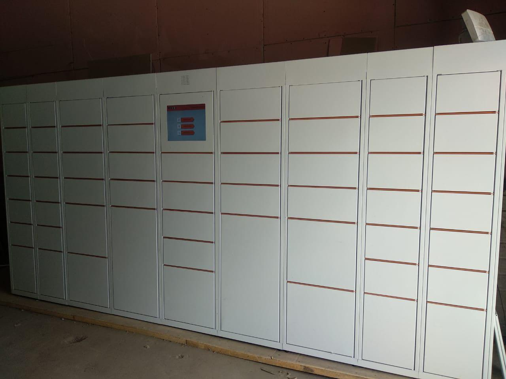

<div class="content-container">
    <header>
        
        <div class="overlay">
            <div class="scanner-shell" [hidden]="!hasDevices">
                <header>
                    <mat-form-field appearance="fill">
                        <select matNativeControl matInput (change)="onDeviceSelectChange($event.target.value)">
                            <option value="" [selected]="!currentDevice">Устройство не выбрано</option>
                            <option *ngFor="let device of availableDevices" [value]="device.deviceId"
                                    [selected]="currentDevice && device.deviceId === currentDevice.deviceId">{{device.label}}</option>
                        </select>
                    </mat-form-field>
                </header>

                <zxing-scanner [torch]="torchEnabled" [(device)]="currentDevice" (scanSuccess)="onCodeResult($event)"
                               [formats]="formatsEnabled" [tryHarder]="tryHarder"
                               (permissionResponse)="onHasPermission($event)"
                               (camerasFound)="onCamerasFound($event)"
                               (torchCompatible)="onTorchCompatible($event)"></zxing-scanner>

                <ng-container *ngIf="qrResultString">
                    <div class="result-container">
                        <section class="results">
                            <div>
                                <small>Результат</small>
                                <strong>{{ qrResultString }}</strong>
                            </div>
                            <button mat-icon-button (click)="clearResult()">&times;</button>
                        </section>
                        <section class="results">
                            <strong>{{ copied }}</strong>
                            <button class="btn btn-small waves-effect waves-light" (click)="copied = qrResultString">
                                Сканировать
                            </button>
                        </section>
                    </div>
                </ng-container>

            </div>

            <ng-container *ngIf="hasPermission === undefined">

                <h2>Ожидаем права доступа.</h2>

                <blockquote>
                    Если у Вашего устройства нет камеры, права не будут предоставлены.
                </blockquote>

            </ng-container>

            <ng-container *ngIf="hasPermission === false">

                <h2>Вы отклонили права на камеру, мы не можем ничего сканировать без них. 😪</h2>

            </ng-container>

            <ng-container *ngIf="hasDevices === undefined">

                <h2>Не удается найти устройства.</h2>

                <blockquote>
                    Это может быть изза ошибки безопасности.
                </blockquote>

            </ng-container>

            <ng-container *ngIf="hasDevices === false">

                <h2>Не удается найти устройства.</h2>

                <blockquote>
                    Возможно к Вашему устройству не подключены медиа устройства.
                </blockquote>

            </ng-container>

        </div>
    </header>
</div>
